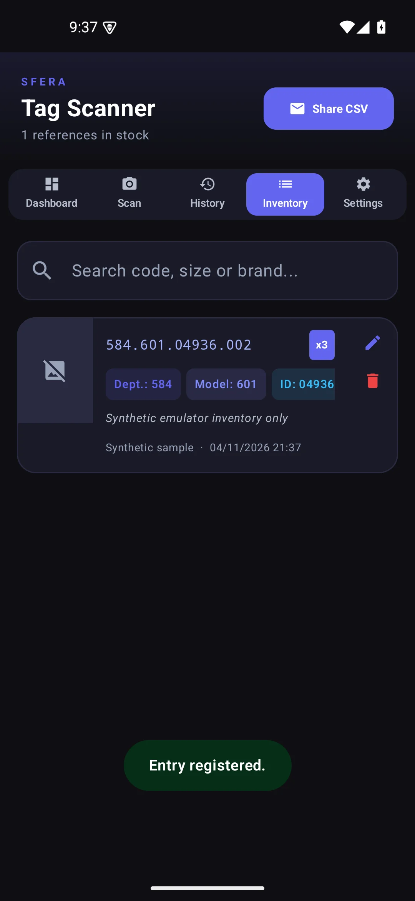

Sfera Tag Scanner
Inspect clothing references, track inventory entries and exits, and review stock history.

How it works
Native Kotlin rules preserve leading zeros. Room transactions keep stock and movements consistent. The browser demo simulates the workflow with sample data.
Verification and demo scope
Four JVM and three instrumentation tests passed on the Android emulator, including Room rollback and ML Kit OCR on a synthetic bitmap. Physical camera and RFID workflows remain unverified.